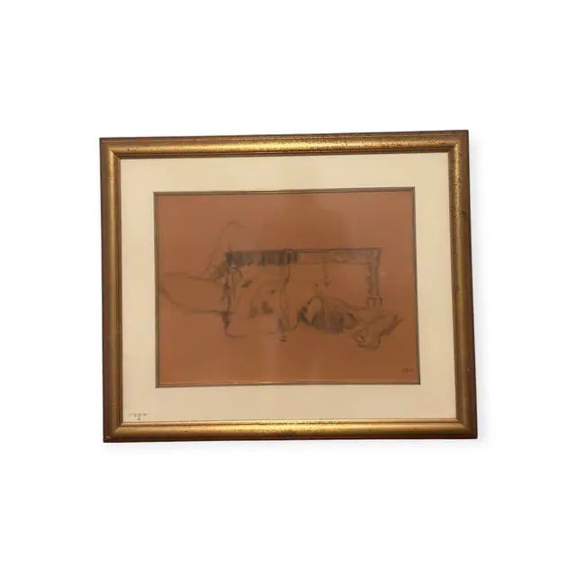
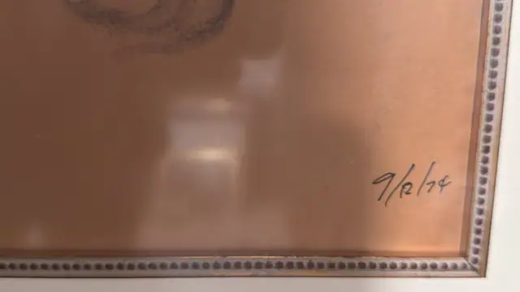
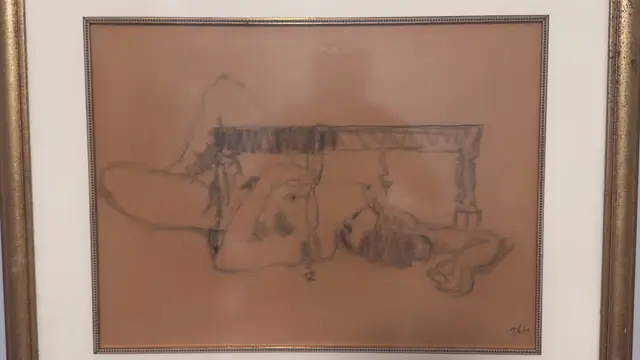

Paintings & Prints
Charcoal Reclining Figure Study on Toned Paper, Framed, 1974
Unknown · dated 1974
Price Upon Request



About the Item
A gestural charcoal study on warm terracotta-toned paper: a heavily hatched horizontal bar with turned legs runs across the upper half like a table or bed frame, while below and around it long sweeping contour lines describe a reclining body, a raised knee and a dropped arm. The drawing is deliberately unfinished, with smudged shadow in the hatching and large areas of bare toned paper left as light. Only greys and blacks appear against the salmon ground. Medium: charcoal and graphite on toned paper. Inscribed on the reverse or mount: 9/12/74. Condition: Sheet is uniformly warm-toned (probably as made); no tears or foxing visible; a small illegible pencil note sits on the mat at lower left; heavy glass reflections.
Details
- Creator:
- Unknown
- Creation Year:
- dated 1974
- Dimensions:
- Height: 27.5 in (69.85 cm)
Width: 33.5 in (85.09 cm)
outside of frame - Medium:
- charcoal and graphite on toned paper
- Period:
- 20Th
- Condition:
- Offered in the condition shown in the photographs.
- Reference Number:
- VO-107
- Documentation:
- no certificate or label photographed
- Gallery Location:
- 9/12/74